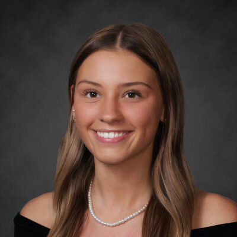

About Me
Hello! My name is Katherine Link. I am currently a senior at the University of Missouri–Columbia majoring in Speech, Language, and Hearing Sciences. After I graduate in May 2027, I plan to attend graduate school to obtain a master’s degree in speech-language pathology. A few of my campus involvements include Alpha Delta Pi, club volleyball, and the Disability Center Peer Mentor Program. Some of the opportunities that have helped prepare me for a professional setting include the National Student Speech Language Hearing Association (NSSLHA), my position as a Student Office Assistant, and a clinical apprenticeship. During the fall 2026 semester, I am excited to begin research focused on perception, communication, and development. Beginning graduate school applications has allowed me to take a step back and reflect on my undergraduate experience. I am extremely grateful for my time at the University of Missouri–Columbia and the professors who have prepared me for my next chapter.
Education Overview
- University of Missouri–Columbia
Columbia, Missouri- College of Health Sciences
- Degree: Bachelor of Science in Speech, Language, and Hearing Sciences
- Expected Graduation: May 2027
- St. Francis Borgia High School
Washington, Missouri- Degree: High School Diploma
- Graduation: May 2024
- Four Rivers Career Center
Washington, Missouri- Program: Health Occupations
- Certifications: Basic Life Support (BLS), Cardiopulmonary Resuscitation (CPR)
- Attended: August 2023 - May 2024